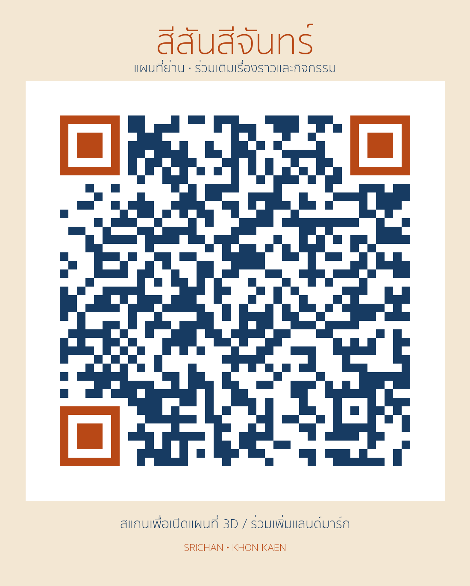

SRICHAN · KHON KAEN
สีสัน ศรีจันทร์
แผนที่ย่านที่เราร่วมเติมเรื่องราว สถานที่ และกิจกรรมใหม่ได้
ตรวจตำแหน่ง 29 ต.ค. 2569: 3D และ uMap ตรงกัน 17 จุด เทียบหมุดรายการ Google Maps ตรง 10 จุด (ยังไม่ยืนยันอาคาร/ทางเข้า) อีก 7 จุดเป็นบริเวณชมมุมภาพโดยประมาณ ดูผลตรวจรายจุด
ตรวจคุณภาพอาคารและหมุด 17 จุด ↗อาคารและทางเข้ายังไม่ผ่านตรวจภาคสนาม ขอบอาคารที่ไม่ทราบความสูงแสดงเป็นแปลนบนพื้น สามารถเปิดความสูงจำลองเองได้
เปิดแผนที่ 3D โหมดเบา ↗หมุนและซูมดูอาคาร รูป และประวัติ 17 สถานที่ ใช้ได้โดยไม่ต้องเปิด WebGLร่วมเพิ่ม / แก้ไขแลนด์มาร์กในแผนที่ ↗ใน uMap กดแก้ไข เลือกปักหมุด ใส่ชื่อ รูป หรือเรื่องราว แล้วกด Save การแก้ไขที่บันทึกในแผนที่ร่วมจะให้ผู้อื่นเห็นได้เปิดแผนที่ 3D โหมดกราฟิกเต็ม ↗แผนกิจกรรมที่ลองวางในหน้า 3D เก็บเฉพาะเบราว์เซอร์เครื่องนั้น ส่งออกไฟล์เพื่อส่งให้ทีมได้ ส่วนข้อมูลใน uMap กับหน้า 3D ยังไม่ซิงก์กันอัตโนมัติ

ดาวน์โหลด PNG · ดาวน์โหลด SVG สำหรับพิมพ์